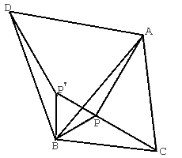

|
There is a point P in a triangle ABC.PA=4,PB=2 and PC=3.ABD and BPP'are regular triangles. Find the length CP+PP'+P'D |
 |
How to use this applet1.Click the radio button to choose the center point to rotate the triangle ABP.2.Drag the red point to rotate the triangle ABP. 3.Click "Init" button to try again. |